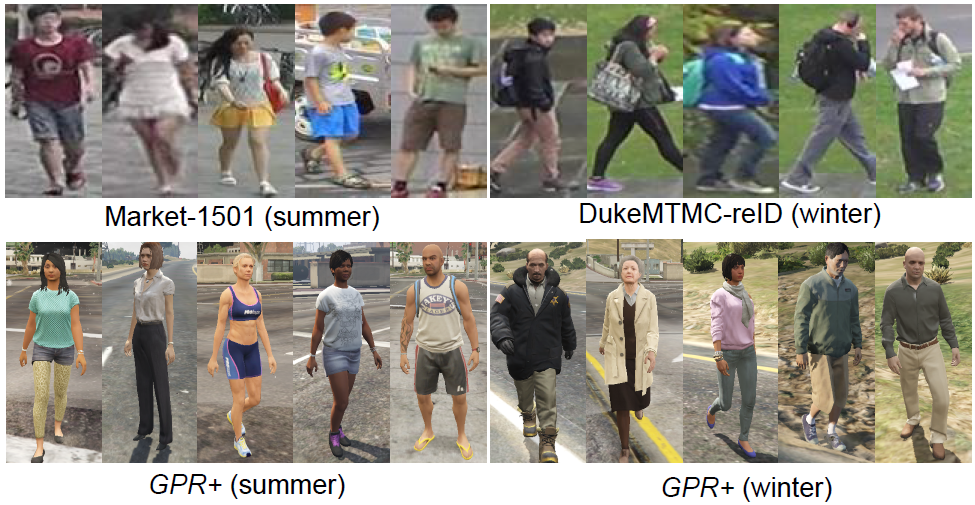
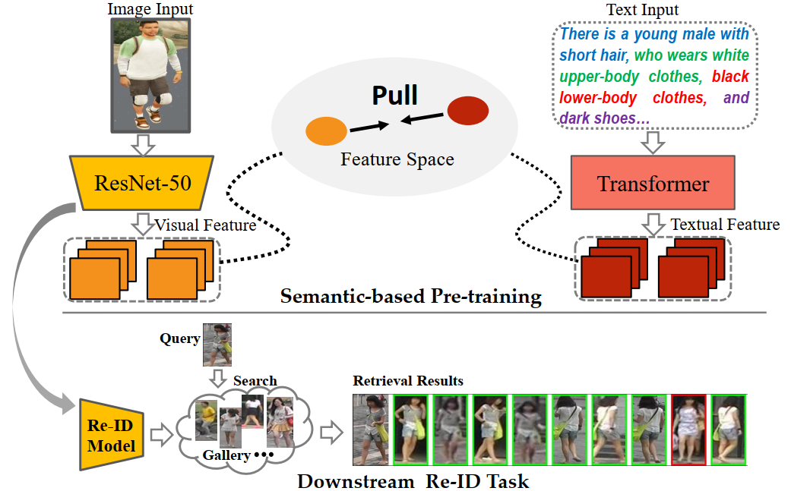
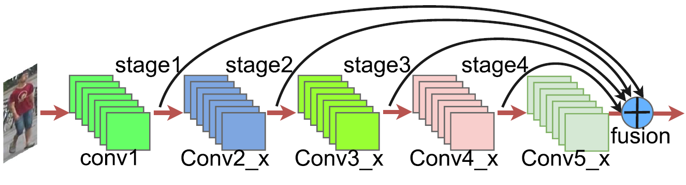
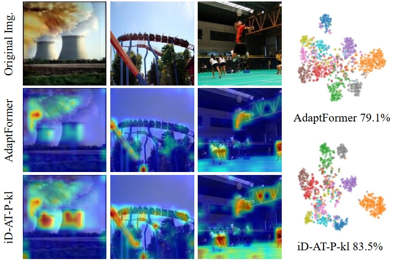
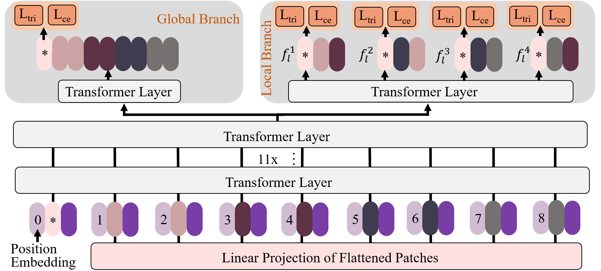
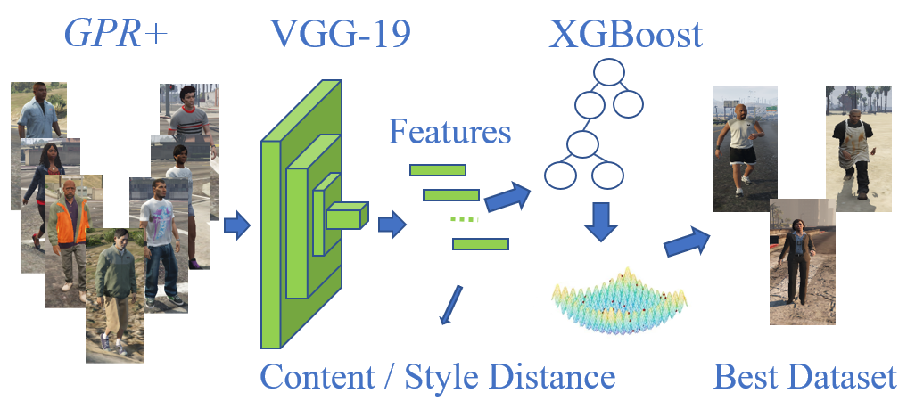
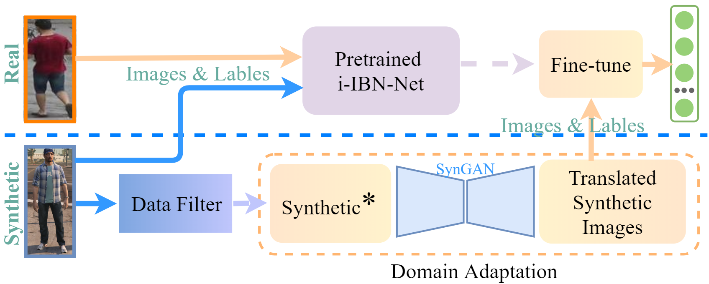

Selected Publications
Dissertation:
|
Research on Person Re-Identification Methods Based on Deep Learning
Suncheng Xiang Ph.D. Dissertation, Shanghai Jiao Tong University, Computer Science and Technology, March 2022. [Paper] |
Preprints:
 |
Supervised Contrastive Learning for Fine-grained Chromosome Recognition
Ruijia Chang, Suncheng Xiang, Chengyu Zhou, Kui Su, Dahong Qian, Jun Wang arXiv preprint, 2023. [arXiv] [Project Page] |
|
Towards Open-set Gesture Recognition via Feature Activation Enhancement and Orthogonal Prototype Learning
Chen Liu, Can Han, Chengfeng Zhou, Crystal Cai, Suncheng Xiang, Hualiang Ni and Dahong Qian arXiv preprint, 2023. [arXiv] [Project Page] |
|
Towards Discriminative Representation with Meta-learning for Colonoscopic Polyp Re-Identification
Suncheng Xiang, Qingzhong Chen, Shilun Cai, Chengfeng Zhou, Crystal Cai, Sijia Du, Zhengjie Zhang, Yunshi Zhong, Dahong Qian arXiv preprint, 2023. [arXiv] [Project Page] |
|
Learning Robust Visual-Semantic Embedding for Generalizable Person Re-identification
Suncheng Xiang, Jingsheng Gao, Mengyuan Guan, Jiacheng Ruan, Chengfeng Zhou, Ting Liu, Dahong Qian, Yuzhuo Fu arXiv preprint, 2023. [arXiv] [Project Page] |
|  |
Attribute Analysis with Synthetic Dataset for Person Re-Identification
Suncheng Xiang, Yuzhuo Fu, Guanjie You, Ting Liu arXiv preprint, 2020. [arXiv] |
Journal Publications:
2024 (3)
|
SubFace: Learning with Softmax Approximation for Face Recognition
Suncheng Xiang*, Hongwei Xu, Mingye Xie, Dahong Qian Multimedia Tools and Applications (MTA), 2024. (CCF-C) [arXiv] [Project Page] |
|
Toward an End-to-End Implicit Addressee Modeling for Dialogue Disentanglement
Jingsheng Gao, Zeyu Li, Suncheng Xiang, Zhuowei Wang, Ting Liu, Yuzhuo Fu Multimedia Tools and Applications (MTA), 2024. (CCF-C) [Paper] |
|
A Simple Normalization Technique Uing Window Statistics to Improve the Out-Of-Distribution Generalization on Medical Images
Chengfeng Zhou, Jun Wang, Suncheng Xiang, Feng Liu, Hefeng Huang, Dahong Qian IEEE Transactions on Medical Imaging (IEEE TMI), 2024. (CCF-B) [Paper] [Project Page] |
|  |
Rethinking Person Re-Identification via Semantic-Based Pretraining
Suncheng Xiang, Dahong Qian, Jingsheng Gao, Zirui Zhang, Ting Liu, Yuzhuo Fu ACM Transactions on Multimedia Computing, Communications and Applications (ACM TOMM), 2023. (CCF-B) [Paper] [arXiv] [Project Page] |
|
Editing Outdoor Scenes with A Large Annotated Synthetic Dataset
Mingye Xie, Zongwei Liu, Suncheng Xiang, Ting Liu, Yuzhuo Fu Multimedia Tools and Applications (MTA), 2023. (CCF-C) [Paper] |
|
Deep Multimodal Representation Learning for Generalizable Person Re-identification
Suncheng Xiang, Hao Chen, Wei Ran, Zefang Yu, Ting Liu, Dahong Qian, Yuzhuo Fu Machine Learning (MLJ), 2023. (CCF-B) [Paper] [arXiv] [Project Page] |
|
Deep Learning-based PET/MR Radiomics for the Classification of Annualized Relapse Rate in Multiple Sclerosis
Sijia Du, et al., Suncheng Xiang, Dahong Qian, Biao Li, Sheng Chen, Min Zhang Multiple Sclerosis and Related Disorders (MULT SCLER RELAT DIS), 2023. (JCR Q2) [Paper] |
 |
Less is More: Learning from Synthetic Data with Fine-grained Attributes for Person Re-Identification
Suncheng Xiang, Dahong Qian, Mengyuan Guan, Binjie Yan, Ting Liu, Yuzhuo Fu, Guanjie You ACM Transactions on Multimedia Computing, Communications and Applications (ACM TOMM), 2023. (CCF-B) [arXiv] [Project Page] |
 |
Learning from Self-Discrepancy via Multiple Co-teaching for Cross-Domain Person Re-Identification
Suncheng Xiang, Yuzhuo Fu, Mengyuan Guan, Ting Liu Machine Learning (MLJ), 2022. (CCF-B, Invited Paper) Presented in the Weakly Supervised Representation Learning Workshop in IJCAI, 2021. [Paper] [arXiv] [Code] |
|  |
Multi-Level Feature Learning with Attention for Person Re-Identification
Suncheng Xiang, Yuzhuo Fu, Hao Chen, Wei Ran, Ting Liu Multimedia Tools and Applications (MTA), 2020. (CCF-C) [Paper] |
|
Progressive Learning with Style Transfer for Distant Domain Adaptation
Suncheng Xiang, Yuzhuo Fu, Ting Liu IET Image Processing (IET-IPR), 2020. (CCF-C) [Paper] |
 |
Unsupervised Person Re-Identification by Hierarchical Cluster and Domain Transfer
Suncheng Xiang, Yuzhuo Fu, Mingye Xie, Zefang Yu, Ting Liu Multimedia Tools and Applications (MTA), 2020. (CCF-C) [Paper] |
Conference Publications:
2024 (3)
|  |
iDAT: inverse Distillation Adapter-Tuning
Jiacheng Ruan, Jingsheng Gao, Mingye Xie, Daize Dong, Suncheng Xiang, Ting Liu, Yuzhuo Fu IEEE International Conference on Multimedia and Expo (ICME), 2024. (CCF-B) [Paper] [arXiv] [Project Page] |
|
VT-ReID: Learning Discriminative Visual-Text Representation for Polyp Re-Identification
Suncheng Xiang*, Cang Liu, Jiacheng Ruan, Shilun Cai, Sijia Du, Dahong Qian IEEE International Conference on Acoustics, Speech and Signal Processing (ICASSP), 2024. (CCF-B, Oral) [Paper] [arXiv] [Slides] [Project Page] |
|
LAMM: Label Alignment for Multi-Modal Prompt Learning
Jingsheng Gao, Jiacheng Ruan, Suncheng Xiang, Zefang Yu, Ke Ji, Mingye Xie, Ting Liu, Yuzhuo Fu Thirty-Eighth AAAI Conference on Artificial Intelligence (AAAI), 2024. (CCF-A) [Paper] [arXiv] [Project Page] |
 |
MEW-UNet: Multi-axis Representation Learning in Frequency Domain for Medical Image Segmentation
Jiacheng Ruan, Mingye Xie, Suncheng Xiang*, Ting Liu, Yuzhuo Fu* International Conference on Medical Image Computing and Computer Assisted Intervention Workshop (MLMI), 2023. [Paper] [arXiv] [Project Page] |
|
SAE-NTM: Sentence-Aware Encoder for Neural Topic Modeling
Hao Liu, Jingsheng Gao, Suncheng Xiang, Ting Liu, Yuzhuo Fu 4th Workshop on Computational Approaches to Discourse (CODI), 2023. [Paper] [Project Page] |
|
CluCDD: Contrastive Dialogue Disentanglement via Clustering
Jingsheng Gao, Zeyu Li, Suncheng Xiang, Ting Liu, Yuzhuo Fu IEEE International Conference on Acoustics, Speech and Signal Processing Satellite Workshop (IWCIM), 2023. [Paper] [arXiv] [Project Page] |
|
Colo-SCRL: Self-Supervised Contrastive Representation Learning for Colonoscopic Video Retrieval
Qingzhong Chen, Shilun Cai, Crystal Cai, Zefang Yu, Dahong Qian*, Suncheng Xiang* IEEE International Conference on Multimedia and Expo (ICME), 2023. (CCF-B, Oral) [Paper] [arXiv] [Project Page] |
 |
AutoKary2022: A Large-Scale Densely Annotated Dataset for Chromosome Instance Segmentation
Dan You, Pengcheng Xia, Qiuzhu Chen, Minghui Wu, Suncheng Xiang*, Jun Wang* IEEE International Conference on Multimedia and Expo (ICME), 2023. (CCF-B) [Paper] [arXiv] [Project Page] |
|
AV-TAD: Audio-Visual Temporal Action Detection with Transformer
Yangcheng Li, Zefang Yu, Suncheng Xiang, Ting Liu, Yuzhuo Fu IEEE International Conference on Acoustics, Speech and Signal Processing (ICASSP), 2023. (CCF-B, Oral) [Paper] |
|
MTDL-Net: Morphological and Temporal Discriminative Learning for Heartbeat Classification
Can Han, Suncheng Xiang*, Dahong Qian* IEEE International Conference on Acoustics, Speech and Signal Processing (ICASSP), 2023. (CCF-B) [Paper] |
|
CC-PoseNet: Towards Human Pose Estimation in Crowded Classrooms
Zefang Yu, Yanping Hu, Suncheng Xiang, Ting Liu, Yuzhuo Fu IEEE International Conference on Acoustics, Speech and Signal Processing (ICASSP), 2023. (CCF-B, Oral) [Paper] |
|
MALUNet: A Muti-Attention and Light-weight UNet for Skin Lesion Segmentation
Jiacheng Ruan, Suncheng Xiang*, Mingye Xie, Ting Liu, Yuzhuo Fu* IEEE International Conference on Bioinformatics and Biomedicine (BIBM), 2022. (CCF-B) [Paper] [Project Page] |
|  |
CDTnet: Cross-Domain Transformer based on Attributes for Person Re-Identification
Mengyuan Guan, Suncheng Xiang, Ting Liu, Yuzhuo Fu IEEE International Conference on Multimedia and Expo Workshops (ICMEW), 2022. [Paper] |
 |
Rethinking Illumination for Person Re-Identification: A Unified View
Suncheng Xiang, Guanjie You, Leqi Li, Mengyuan Guan, Ting Liu, Dahong Qian, Yuzhuo Fu IEEE/CVF Conference on Computer Vision and Pattern Recognition Workshops (CVPRW), 2022. [Paper] [Project Page] [Slides] [Poster] |
 |
Spatial Attention Guided Local Facial Attribute Editing
Mingye Xie, Suncheng Xiang, Feng Wang, Ting Liu, Yuzhuo Fu IEEE International Conference on Multimedia and Expo (ICME), 2022. (CCF-B) [Paper] |
 |
Attention Based Facial Expression Manipulation
Feng Wang, Suncheng Xiang, Ting Liu, Yuzhuo Fu IEEE International Conference on Multimedia Expo Workshops (ICMEW), 2021. [Paper] |
|  |
Taking a Closer Look at Synthesis: Fine-grained Attribute Analysis for Person Re-Identification
Suncheng Xiang, Yuzhuo Fu, Guanjie You, Ting Liu IEEE International Conference on Acoustics, Speech and Signal Processing (ICASSP), 2021. (CCF-B) [Paper] [arXiv] [Project Page] [Slides] [Poster] [Video] |
|  |
Unsupervised Domain Adaptation Through Synthesis for Person Re-Identification
Suncheng Xiang, Yuzhuo Fu, Guanjie You, Ting Liu IEEE International Conference on Multimedia and Expo (ICME), 2020. (CCF-B) [Paper] [Slides] |
 |
Deep Unsupervised Progressive Learning for Distant Domain Adaptation
Suncheng Xiang, Yuzhuo Fu, Ting Liu IEEE International Conference on Tools with Artificial Intelligence (ICTAI), 2019. (CCF-C, Oral) [Paper] [Slides] [Video] |